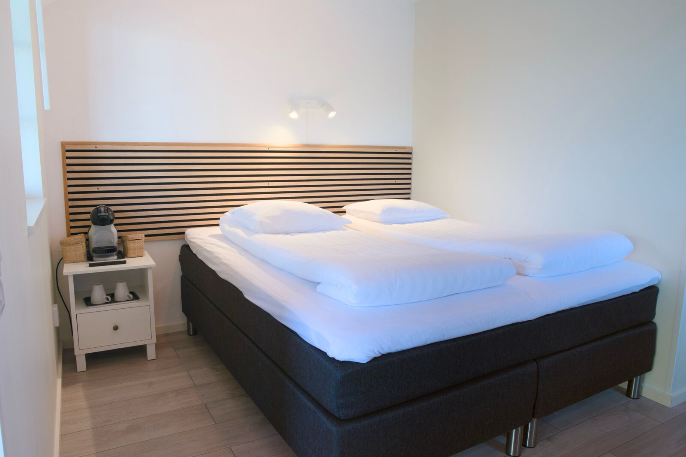
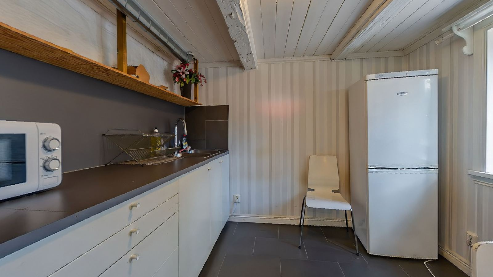

Viikoksi tai kuukaudeksi
Pitkäaikainen majoitus
Sinulle, jolla on pidempi toimeksianto seudulla, joka odotat pääsyä uuteen kotiin tai joka pendelöit Öresundin yli. Kalustettu huone omalla kylpyhuoneella, ilman vaivaa.
- Lyhin aika
- 1 viikko
- Hinta
- Viikoksi tai kuukaudeksi
- Sisältyy
- Wifi, sähkö, siivous
- Keittiö
- Yhteinen
- Viikkosiivous ja vuodevaatteiden vaihto
- Pyykinpesumahdollisuus
- Oma hylly jääkaapissa ja pakastimessa
- Postiosoite tilalla sopimuksen mukaan
- Iso ilmainen pysäköinti myös työajoneuvoille
- Sähköauton latauspisteet
- Smart-TV ja nopea wifi
- Minigolfrata käytössä
Majoittuuko useampi saman yrityksen työntekijä? Teemme tarjouksen henkilömäärän ja oleskelun pituuden mukaan, yhteisellä laskulla. Kokoushuoneen ja juhlatilan voi vuokrata tapaamisiin paikan päällä, ja E6 on muutaman minuutin päässä Landskronan, Helsingborgin ja muun Skånen projekteihin.

Vieraiden keittiö
Valmista omat ruokasi silloin kun haluat
Vieraiden keittiö on pihan valkoisessa rakennuksessa ja auki ympäri vuorokauden. Siellä on liesi, mikroaaltouuni, jääkaappi ja tilaa syödä.

Vieraiden keittiö Täällä hotellivieraat laittavat, säilyttävät ja syövät ruokaa. Auki ympäri vuorokauden.
Vedä kuvaa katsoaksesi ympärillesi. Siirry eteenpäin napsauttamalla kylttejä.